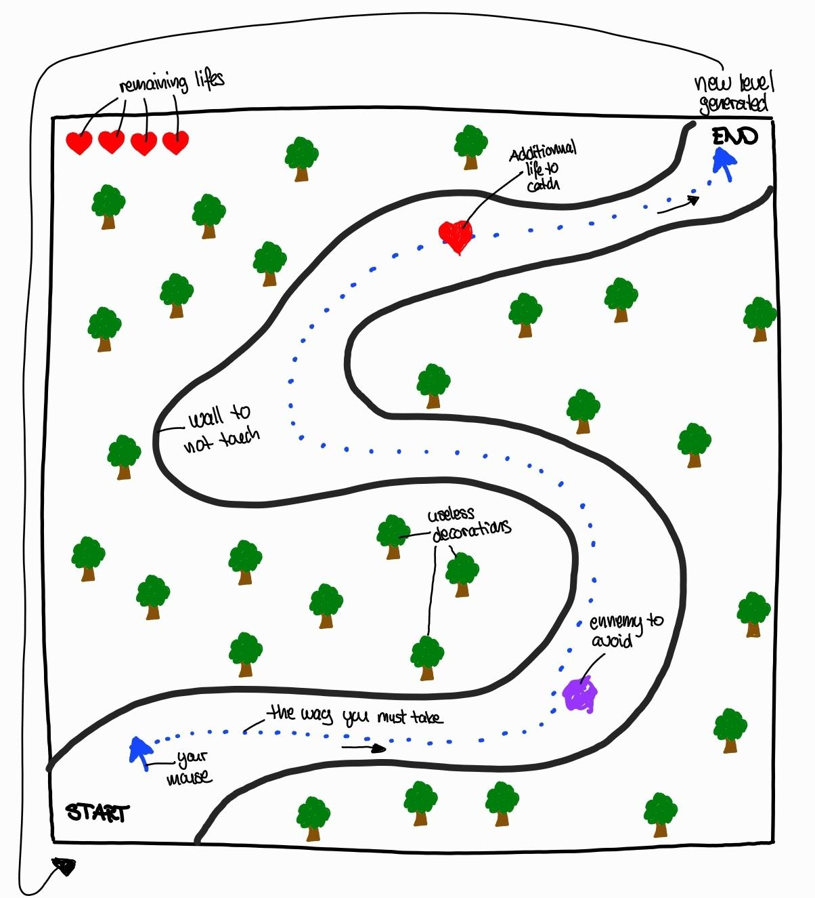

Visual Wireframe of Mouse Rush
By Marion, the 28.03.2025

This wireframe illustrates a typical game level, where the player must move their mouse from the starting point (START) to the end of the level (END) by following a specific path, while avoiding obstacles and interacting with certain elements.
Interactive Game Elements
- The player character: represented here by a blue arrow called "your mouse". It follows a path marked with blue dots ("the way you must take"). The final appearance of the player may vary depending on the chosen graphic style (arrow, avatar, animated sprite, etc.).
- The walls: they border the path and must be avoided ("wall to not touch"). Touching a wall likely causes the loss of a life. The visual style of these walls may evolve (e.g., thorns, rocks, laser walls...).
- Remaining lives: represented by red hearts at the top left of the screen ("remaining lifes"). Their graphic style can change, but the concept of a life counter will remain.
- A life bonus: a single heart on the path ("additional life to catch") that the player can collect to regain a lost life. This bonus could take different forms depending on the game's visual universe.
- An enemy to avoid: shown here in purple ("enemy to avoid"). Touching this enemy may result in a penalty or life loss. Enemies may have various appearances, sizes, or behaviors depending on the level.
Decorative (Non-Interactive) Elements
- Trees: scattered around the path ("useless decorations"), they are only used to dress the scenery. These decorative elements could be replaced by other objects depending on the game’s ambiance (rocks, statues, buildings, etc.).
Objective and Progression
- End of the level: a blue arrow marks the "END" of the level, triggering the generation of a new level ("new level generated"). This system implies that the game is made up of several dynamically or sequentially generated levels.
This project is part of our Business IT training. For more information about our school, you can visit this link: http://www.hevs.ch/.
The application's source code is available on the project’s GitHub. To access it, please contact Marion Rossier.